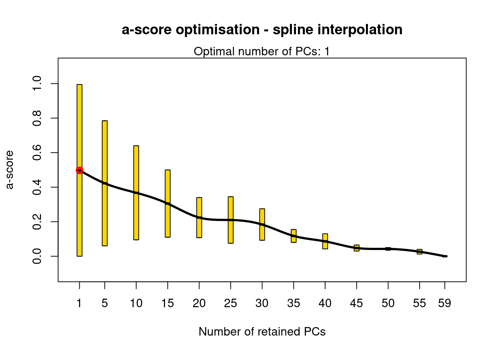

PATH="~/Desktop/CurrentWORK/Harrier_project/Harrier_scripts_Github/"
##Edit this PATH variable so it points to the Github repository
setwd(paste(PATH,"Scripts_harrier/Landscape_genetics_scripts/",sep=""))
library(adegenet)
a<-read.PLINK("DAPC.raw", map.file = "DAPC.map", n.cores = 1)
Reading PLINK raw format into a genlight object...
Reading loci information...
Reading and converting genotypes...
.
Building final object...
...done.###Identifying most likely number of clusters
#grp <- find.clusters(a,max.n.clust=5,n.pca=100)
### 2 clusters. You can test this yourself by uncommenting.
grp2 <- find.clusters(a,n.clust=2,n.pca=100)
###How many axes to keep
dapctest <- dapc(a, grp2$grp,n.da=2, n.pca=100)
temp1 <- optim.a.score(dapctest)
##Keep 1 PC axes (same for datasets with and without outgroups)
dapc2 <- dapc(a,grp2$grp,n.da=2, n.pca=1)
myCol <- c("green","red")
scatter(dapc2, col=myCol,scree.da=FALSE, bg="white", pch=20, cell=0, cstar=0, solid=.4,cex=3,clab=0, leg=TRUE)write.table(dapc2$posterior,file="DAPC_2_clusters_final.txt",sep="\t",quote=F,col.names=F)